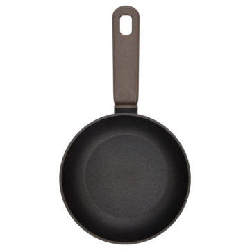
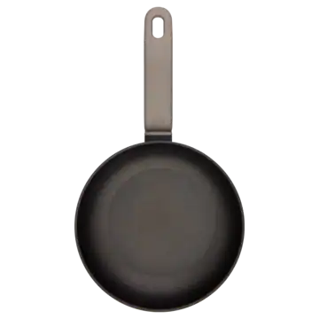
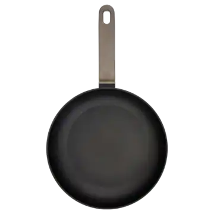
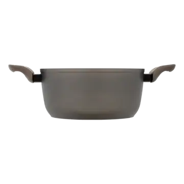
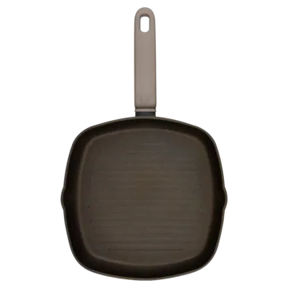
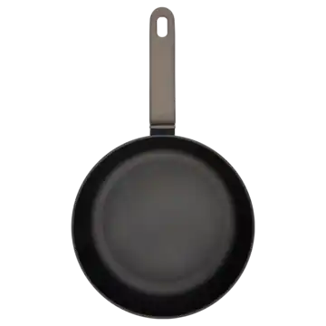
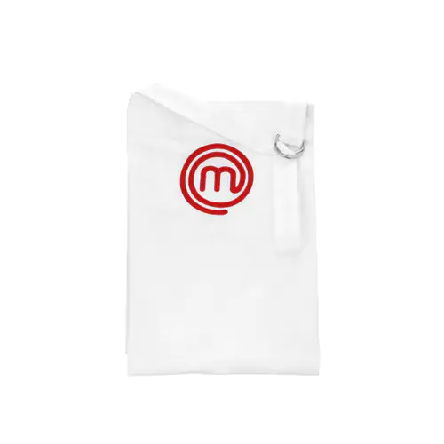
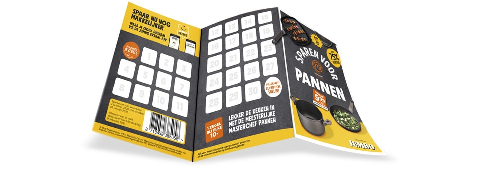
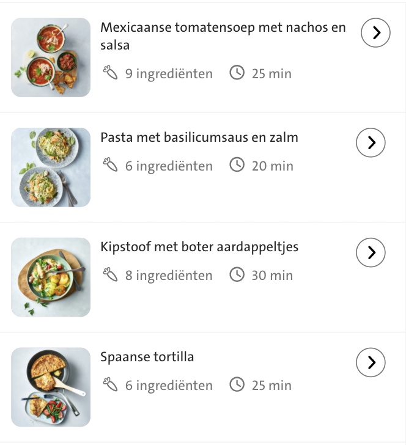

De beste pannenactie van dit moment
En kook als een échte kok
Lees hoe het werkt- Pannenactie
- Grillpan
- Hapjespan
- Koekenpan
- Wokpan
- Braadpan
Koken als een echte chef met de pannen van MasterChef
Wil jij koken als een chef-kok? Spaar dan nu voor hoge kortingen op verschillende MasterChef pannen. Deze pannen zijn van een professionele kwaliteit en daarmee maak je de lekkerste gerechten. En spaar je ook mee met Jumbo Extra's? Dan kun je de set compleet maken met een pannendeksel en een schort, zowel voor kids als volwassenen.
Bij elke € 10,- aan boodschappen ontvang je een spaarzegel. Met een volle spaarkaart kun je een pan naar keuze aanschaffen met een flinke korting, die wel tot 75 % kan oplopen. Zo maakt Jumbo kwalitatieve pannen voor iedereen betaalbaar, want we gunnen iedereen het gevoel een echte kok te zijn. Maar zorg dat je er snel bij bent, want op = op!
Bekijk de actievoorwaarden Bekijk de veelgestelde vragenVoor deze pannen kun je sparen
-

Master Chef Aluminium Koekenpan 20cm
9,99 + volle spaarkaart39,95
9,99
9,99/stuk+
-

Master Chef Aluminium Koekenpan 24cm
13,99 + volle spaarkaart44,95
13,99
13,99/stuk+
-

Master Chef Aluminium Koekenpan 28cm
9,99 + volle spaarkaart39,95
9,99
9,99/stuk+
-

Master Chef Aluminium Braadpan 24cm
17,99 + volle spaarkaart69,95
17,99
17,99/stuk+
-

Master Chef Aluminium Koekenpan 20cm
9,99 + volle spaarkaart39,95
9,99
9,99/stuk+
-

Master Chef Aluminium Koekenpan 20cm
9,99 + volle spaarkaart39,95
9,99
9,99/stuk+
-
Master Chef Aluminium Koekenpan 20cm
9,99 + volle spaarkaart39,95
9,99
9,99/stuk+
Maak de set compleet met jumbo Extra's
Spaar je mee met Jumbo Extra's? Dan kun je je pannenset aanvullen met onderstaande producten. Exclusief verkrijgbaar met Jumbo Extra’s punten + bijbetaling. De pannendeksel en schorten vind je in jouw Jumbo winkel.
-

Schort
-
Junior schort
-
Deksel
Spaar makkelijker en sneller met Jumbo Extra's
Als je via Jumbo Extra's spaart, profiteer je van leuke extra's:
- Extra artikelen om voor te sparen: een glazen deksel en een schort, die verkrijgbaar is voor volwassenen én voor je kleine Junior Chef.
- Je zegels worden automatisch bijgeschreven als je je Jumbo Extra's pas of app scant bij de kassa. Geen gedoe meer met losse zegels die kwijtraken.
Zo spaar je voor MasterChef pannen
Bij elke 10 euro aan boodschappen bij Jumbo ontvang je één pannenzegel. Als je online boodschappen doet, krijg je de pannenzegels van jouw bezorger of van de medewerker bij het Pick Up Point.
- Sparen kan van woensdag 7 oktober 2020 t/m dinsdag 26 januari 2021
- Plak de pannenzegels op de spaarkaart. Met 30 pannenzegels heb je een volle spaarkaart.
- Iedere week zijn er nieuwe actieproducten waarmee je extra snel spaart.
- Één volle spaarkaart + bijbetaling = een MasterChef pan naar keuze.
- Inleveren van je volle spaarkaart kan t/m dinsdag 9 februari 2021 bij jouw Jumbowinkel, bij de medewerker van het Pick Up Point of bij de bezorger. Als je online boodschappen doet, voeg dan de pannen toe aan je bestelling.
Download de spaarkaart >
Daarom ben je met MasterChef onder de pannen
Met zo'n fantastische pan van MasterChef kan je gerecht haast niet mislukken. Nog even de voordelen op een rijtje:
- Vaatwasmachinebestendig
- Hoogwaardige anti-aanbaklaag
- Geschikt voor alle warmtebronnen
- Extra dik aluminium voor uitstekende warmtegeleiding
- Soft touch handvat
- Europese productie
- Ergonomische handgrepen met soft-touch-effect voor een comfortabele, veilige grip
Extra snel sparen met deze actieproducten
Deze aanbiedingen zijn geldig van woensdag 18 november t/m dinsdag 24 november 2020 en is geldig op het moment van ophalen of bezorgen.
Wat eten we? Gebruik je pannen bij deze lekkere, snelle recepten
 Meer receptenVeelgestelde vragen
Bekijk alle veelgestelde vragenAndere vraag?
Heb je een vraag over deze spaaractie? We helpen je graag! Laat het ons weten via het contactformulier of:
- Facebook
08.00 - 20.00 uur (ma. t/m zo.) - Twitter
08.00 - 20.00 uur (ma. t/m zo.) - 0800 022 01 61
08.00 - 20.00 uur (ma. t/m za.)